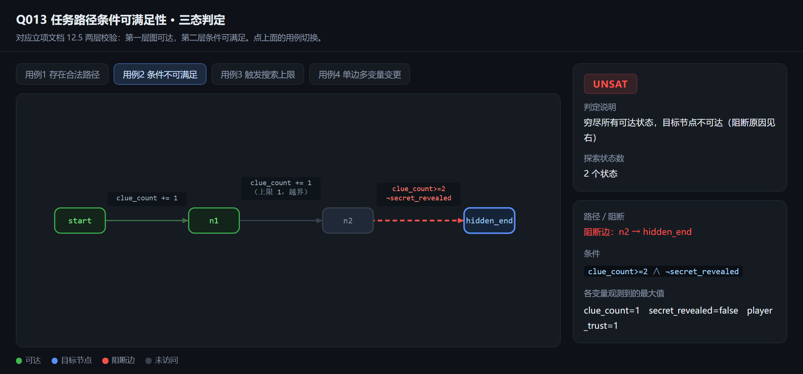
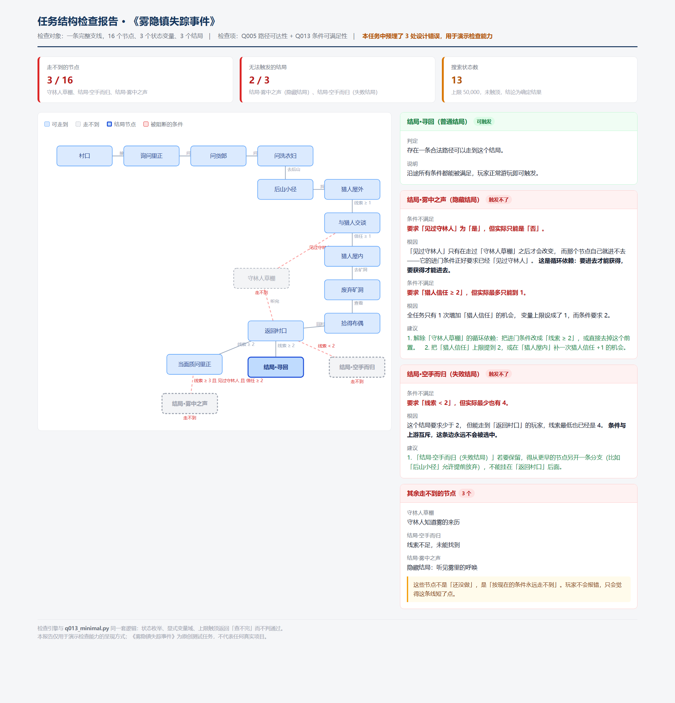
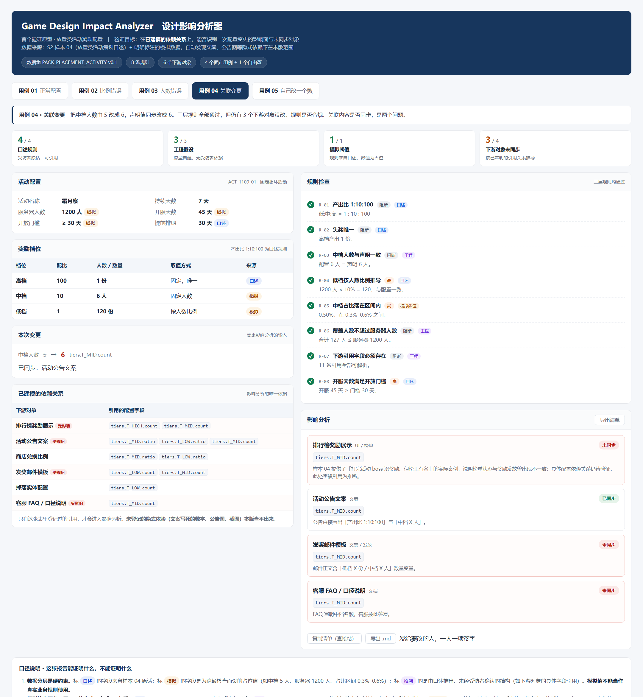
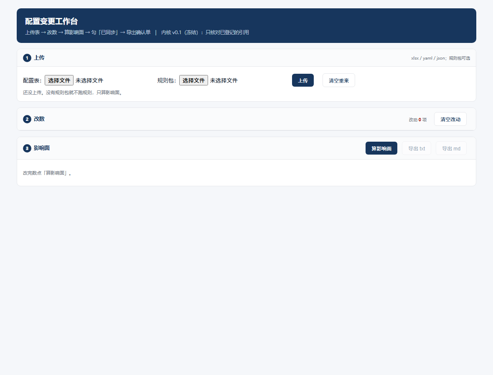
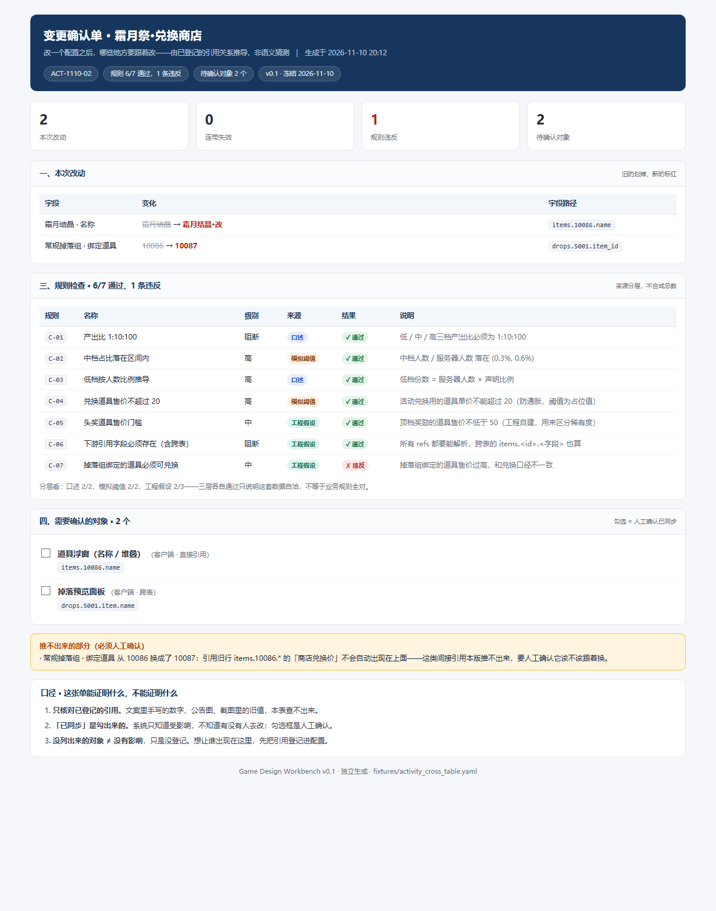

面向游戏策划的 AI 辅助工作台。核心不是生成内容，而是回答一个问题： 改了一个设计对象之后，还有哪些地方要跟着改，谁改。

给定任务图与状态变量，判断某个结局是否真的能被触发。输出不是「通过 / 不通过」，而是 SAT（存在合法路径）/ UNSAT（不存在）/ UNKNOWN（搜索触顶）。
UNKNOWN 不降级为通过——这是它和普通校验工具最大的区别。
gdw/quest.py，命令行 + 工作台均可调）。
一条 16 节点、3 个变量、3 个结局的完整支线，被查出 3 处设计错误。
其中一处是循环依赖：进「守林人草棚」要求「见过守林人」，而「见过守林人」只有进了草棚才会获得——要进去才能得到，要得到才能进去。
gdw/structure.py，S1–S5 五类结构检查，移植时还新发现一处原报告漏掉的设计错误）。
改一个活动数值，系统列出所有引用它的下游对象（排行榜、发奖邮件、公告、客服 FAQ），区分「已同步」和「待确认」。
最有力的一屏：规则全部通过，但仍有 3 处没同步——合规与一致是两个问题。
原型证明"能做"，产品才谈"有用没用"。变更影响分析被验证后，我把它的内核重写成了一个 带 157 个测试的 Python 包：命令行 + 本地工作台，读真表、扛脏表，当天被第一位用户实测抓出 bug、当晚修复。 随后另两个原型也并入同一内核，并用变异评测给检查器出了第一份定量成绩单。

一条命令 python -m gdw web 起一个本地工具：拖入任意配置表（xlsx / yaml / json），
每个字段可直接改，点一下算出影响面，逐项勾「已同步」，导出带勾选状态的确认单。
扛脏表：合并单元格标题、表头不在第一行、中文表头、数字存成文本、引用分隔符混用—— 用一份故意做脏的表压测并钉进测试。

跑一条命令得到自包含网页：开头一段自然语言（改了什么、哪里不对、谁得跟着动——按负责人分组）， 后面才是规则表和字段路径。来源分层展示，不把 8/8 合成一句话。
勾选框是真实的——收件人直接勾，打印出来就是纸面确认单。
v0.2 追加（2026-11-11）：任务可达性三态与结构检查并入同一内核（三原型 3/3）； 新增变异评测——往任务图基准里注入 5 处确定性破坏，强检出 3 / 仅提示 1 / 漏报 1（如实报告并写明原因）， 检出率 4/5；工作台补上勾选状态落盘（重传同一配置自动恢复）与两版本一键 diff。 到此切入点内功能收口，后续迭代只等真实使用反馈。
表里只回答「我知道什么、不知道什么」。事故证据（问题存在）和能力证据（原型做到什么）分开看——两组材料不互相顶替：公开事故证明问题真实，证明不了原型有用。
| 假设 | 状态 | 依据与限制 |
|---|---|---|
| V-01 设计对象之间存在需要人工维护的依赖 | 已验证 | 一位活动策划明确描述了「改奖励人数后，回头查排行榜、邮件、公告」的实际动作。 |
| V-02 这种维护会漏，且漏了有后果 | 已验证仅问题层 | 五例公开事故公告（剑网一 / 三国群英传2 / 武林同萌傳 / 龙图智库 / 全民小镇），厂商自认「公告与实际不一致」并补发、退款、甚至把实际概率永久上调。限制：五例全部发生在运营公告环节，没有一例是策划改配置表后下游没跟。证明的是「不一致会发生且有代价」，不是「策划岗普遍如此」，更不是「本原型能解决」。 |
| V-03 现有方式需要持续人工投入 | 已验证 | 核对依赖「配置表 + 需求文档 + 历史版本」逐项进行，有载体但检查动作由人完成。这条是独立证据（访谈），不由 V-02 代替。 |
| 当前组合：A——依赖存在、会漏、漏了有代价、且现在靠人维持。但 A 只成立在「问题层」：不包含岗位层（策划侧只有一位受访者口述），也不包含方案层（原型价值未验证，见第四节第 4 条）。 能写到这一步：问题真实存在且有成本。不能写「策划岗普遍如此」，也不能写「现有工具能解决」。 | ||